PoWatch · Generated documentation
Every model-executing path in the PoWatch codebase: where inference runs, which models and versions are bound, what governs fallback, what it costs — and, explicitly, what the repository does not currently measure or price.
PoWatch uses AI in two places. The one that matters runs on the caregiver's own device and is free. The other is a cloud service that writes shift handoff summaries — it is switched off by default, and when it is off (or breaks) a plain template writes the summary instead, so the feature never fails outright.

ai_topology_verybasic.svgA small vision model runs inside the web browser, looking at a camera frame roughly every 10 seconds and writing one sentence about what it sees. Nothing is sent to an AI company. It costs nothing per use.
Always on Free SmolVLM family
When a caregiver ends a shift, PoWatch can ask Azure OpenAI to turn the day's observations into a short brief. This is off unless someone deliberately turns it on and supplies an endpoint. If it is off, or if the call fails for any reason, a fixed template writes the same brief without any AI.
Off by default Azure OpenAI Never fails outright
There is no pricing configuration and no token counting anywhere in the project. If the cloud service is switched on, nobody can say what it costs — not before, and not after the fact.
AiPricing section existsThe report was asked to derive projected monthly cost from an AiPricing configuration. That configuration section does not exist in this repository. It appears in no appsettings*.json, no options class, no Bicep parameter and no environment sample. Every per-token price is therefore missing, and no monthly figure can be stated honestly. The Complete view lists exactly which prices would be needed and provides a calculator you can drive with your own contracted rates.
| Service | Where it runs | Billing unit | Enabled by default | Marginal cost |
|---|---|---|---|---|
| Browser vision inference | Caregiver's device (WebGPU / WASM) | None — device compute | Yes | $0.00 per inference |
| Model weight download | Hugging Face Hub → browser | Bandwidth (HF-side, not billed to PoWatch) | Yes | $0.00 to this project |
| Azure OpenAI handoff brief | PoWatch.Api → Azure OpenAI | Per input + output token | No — AzureOpenAiEnabled=false | Unpriced |
| Template handoff brief | PoWatch.Api (in-process) | None — deterministic strings | Yes (the default binding) | $0.00 |
A repository-wide search for anthropic, claude, @anthropic-ai and any claude-* model identifier across src/, tests/, infra/ and Directory.Packages.props returns no matches. There is no Anthropic SDK reference, no API endpoint, no model id and no configuration placeholder. Azure OpenAI is the only hosted LLM provider in the codebase.

ai_topology_basic.svgwwwroot/model-registry.jsonThe registry is the single source of truth shared by the C# model picker and the inference worker. The operator selects one; smolvlm2-256m is the default.
| Key | Model id | Configured precision | Fallback 1 | Fallback 2 |
|---|---|---|---|---|
smolvlm2-256m default | HuggingFaceTB/SmolVLM2-256M-Video-Instruct | WebGPU fp16 | WebGPU fp32 | WASM q8 |
smolvlm-256m | HuggingFaceTB/SmolVLM-256M-Instruct | WebGPU fp16 | WebGPU fp32 | WASM q8 |
smolvlm-500m | HuggingFaceTB/SmolVLM-500M-Instruct | WebGPU fp16 | WebGPU fp32 | WASM q8 |
smolvlm2-500m | HuggingFaceTB/SmolVLM2-500M-Video-Instruct | WebGPU fp16 | WebGPU fp32 | WASM q8 |
smolvlm-2b | HuggingFaceTB/SmolVLM-Instruct | WebGPU q4f16 | WebGPU q4 | WASM q4 |
AzureOpenAi section| Setting | Committed value | Validation | Status |
|---|---|---|---|
Endpoint | empty | none | Must be supplied at deploy time |
ApiKey | empty | none | Correct — belongs in Key Vault |
DeploymentName | gpt-5.4-nano | [Required] | Configured |
ApiVersion | 2024-02-01 | [Required] | Configured |
MaxCompletionTokens | 600 | [Range(1, 128000)] | Sent as max_tokens |
Temperature | 0.3 | [Range(0.0, 2.0)] | Configured |
| Route | AI service reached | Trigger | Gate |
|---|---|---|---|
POST /api/archives/{date}/handoff-brief | IHandoffSummarizer → Azure OpenAI or template | Operator presses Generate brief on /archives | HandoffCoachEnabled → 503 |
POST /api/observer/ingest | None server-side — consumes the browser model's output | Monitoring loop tick, default every 10 s | ObservationLoopEnabled |
GET /api/archives/{date}/handoff-report | None — QuestPDF renderer over deterministic data | Operator downloads the PDF | 503 when the native renderer is unavailable |
JS bridge powatchInference.captureAndInfer | Browser VLM in a Web Worker | Every loop tick, after a frame-diff check | Frame-diff and output-quality gates |
AzureOpenAiEnabled is true and Endpoint is non-empty.AddStandardResilienceHandler() (retry, circuit breaker, timeouts) with a 45 s client timeout.Neither service measures TTFT, and neither measures throughput. The browser path records total wall-clock time per inference and a client-side p95 over the last 100 cycles; it never observes the first token, and it never counts tokens, so tokens-per-second cannot be computed. The Azure OpenAI path records no latency at all and discards the response's usage object — only choices[0].message.content is deserialized — so prompt and completion token counts are never captured on either side.
No AiPricing configuration exists. Input price, output price and cached-input price for gpt-5.4-nano are all absent, and there is no fallback price table in code. Combined with the missing token counts above, cost cannot be projected or reconciled after the fact.
HandoffCoach:MaxPromptSignificantEvents (20) and MaxPromptOutlierEvents (10) are bound, defaulted and unit-tested, but no code path reads them. The prompt builder hard-codes .Take(5) for both lists and .Take(3) for drift alerts. Raising either setting changes nothing.
Every chart below is paired with the table it was built from, so the figures stay checkable without a JavaScript runtime.
| Execution location | Count | Members |
|---|---|---|
| Client (device) | 1 | Browser VLM via inference worker |
| Server → cloud provider | 1 | AzureOpenAiHandoffSummarizer |
| Server, deterministic | 1 | TemplateHandoffSummarizer |
| Mock / demo | 1 | MockInferenceService (UseMockAi) |
| Path | Ceiling | Source |
|---|---|---|
| Browser VLM — deployed default | 48 | wwwroot/appsettings.json MaxInferenceTokens |
| Browser VLM — code default | 96 | ClientFeatureFlagsOptions |
| Browser VLM — hard maximum | 256 | Math.Clamp(…, 32, 256) at the call site |
| Azure OpenAI completion | 600 | AzureOpenAi:MaxCompletionTokens |

ai_topology_complete.svg| # | Service | Implementation | Provider | Executes a model? | Registration |
|---|---|---|---|---|---|
| 1 | Room vision inference | wwwroot/js/inference-worker.js + inference-bridge.js | On-device (transformers.js 3.8.1 / ONNX Runtime); weights from Hugging Face Hub | Yes | Web Worker, driven from ObserverHub over the powatchInference JS bridge |
| 2 | Handoff brief — AI | AzureOpenAiHandoffSummarizer | Azure OpenAI (chat completions REST) | Yes | AddHttpClient<…>().AddStandardResilienceHandler(), resolved through IHandoffSummarizer |
| 3 | Handoff brief — template | TemplateHandoffSummarizer | None — deterministic C# templates | No | AddScoped; the default IHandoffSummarizer and the internal fallback of #2 |
| 4 | Mock inference marker | MockInferenceService : IInferenceService, IMockable | None | No | Registered when FeatureFlags:UseMockAi = true; its presence raises the persistent MOCK DATA chip |
| 5 | Real inference marker | WebGpuInferenceService : IInferenceService | None | No | Deliberately empty marker type — its absence of IMockable is what hides the MOCK DATA chip |
Model-executing services: 2. Hosted inference providers: 1 (Azure OpenAI). Model-weight distributors: 1 (Hugging Face Hub — it serves ONNX weights to the browser but performs no inference). Deterministic generators: 1. Marker/mock registrations: 2.
Searched case-insensitively for anthropic, claude, @anthropic-ai, claude-* and us.anthropic.* across src/, tests/, infra/ and Directory.Packages.props. Zero matches. The only file that matched a broader provider search was ort-wasm-simd-threaded.jsep.wasm, a compiled ONNX Runtime binary with no relation to Anthropic. Conclusion: Anthropic is not present in this codebase as a dependency, endpoint, model identifier or configuration placeholder.
AiPricing configuration section does not existVerified absent from: src/PoWatch.Api/appsettings.json, appsettings.Development.json, appsettings.Production.json, appsettings.Test.json, src/PoWatch.Client/wwwroot/appsettings*.json, every class under PoWatch.Application/Options/, infra/main.bicep and its parameter files, and .env.example. No options type binds it and no service reads it. Projected monthly cost cannot be derived from configuration, because there is no configuration to derive it from.
| Model / deployment | Price dimension | Expected config key | Value found | Status |
|---|---|---|---|---|
gpt-5.4-nano (Azure OpenAI deployment) | Input tokens | AiPricing:gpt-5.4-nano:InputPerMillion | — | Missing |
| Output tokens | AiPricing:gpt-5.4-nano:OutputPerMillion | — | Missing | |
| Cached input tokens | AiPricing:gpt-5.4-nano:CachedInputPerMillion | — | Missing | |
| Currency / billing region | AiPricing:Currency | — | Missing | |
SmolVLM2-256M-Video-Instruct | Per-token | n/a — device compute | n/a | Not applicable · $0 |
SmolVLM-256M-Instruct | Per-token | n/a — device compute | n/a | Not applicable · $0 |
SmolVLM-500M-Instruct | Per-token | n/a — device compute | n/a | Not applicable · $0 |
SmolVLM2-500M-Video-Instruct | Per-token | n/a — device compute | n/a | Not applicable · $0 |
SmolVLM-Instruct (2.2 B) | Per-token | n/a — device compute | n/a | Not applicable · $0 |
| Hugging Face Hub weight egress | Per GB | n/a — borne by the Hub | n/a | Not billed, but a hard runtime dependency |
The structure of the cost is fully determined by the code even though the prices are not. One brief is exactly one chat completion: two messages, output capped at MaxCompletionTokens. Enter your rates below to project a monthly figure; the defaults are zero because the repository supplies no price.
The prompt is built deterministically by BuildUserPrompt and is bounded: a fixed system prompt, seven summary lines, at most 5 outlier lines, at most 5 significant-event lines, and at most 3 drift lines. Its size is therefore predictable within a narrow range — but the code never counts tokens and never reads the response's usage object, so no measured value exists anywhere in the system. Treat 900 as an order-of-magnitude placeholder and replace it once token accounting is added.
monthlyCost = briefsPerMonth
× ( promptTokens × inputPricePerMillion / 1e6
+ outputTokens × outputPricePerMillion / 1e6 )
where outputTokens ≤ AzureOpenAi:MaxCompletionTokens (= 600)
promptTokens = f(system prompt, 7 summary lines,
≤5 outliers, ≤5 significant, ≤3 drift)
inputPricePerMillion = MISSING ← no AiPricing section
outputPricePerMillion = MISSING ← no AiPricing section
| Service | Model / deployment | Version pin | Configured runtime | Fallback 1 | Fallback 2 | Loader |
|---|---|---|---|---|---|---|
| Browser vision | HuggingFaceTB/SmolVLM2-256M-Video-Instruct | Repo main — no revision pin | WebGPU fp16 | WebGPU fp32 | WASM q8 | AutoModelForImageTextToText |
HuggingFaceTB/SmolVLM-256M-Instruct | Repo main — no revision pin | WebGPU fp16 | WebGPU fp32 | WASM q8 | AutoModelForImageTextToText | |
HuggingFaceTB/SmolVLM-500M-Instruct | Repo main — no revision pin | WebGPU fp16 | WebGPU fp32 | WASM q8 | AutoModelForImageTextToText | |
HuggingFaceTB/SmolVLM2-500M-Video-Instruct | Repo main — no revision pin | WebGPU fp16 | WebGPU fp32 | WASM q8 | AutoModelForImageTextToText | |
HuggingFaceTB/SmolVLM-Instruct (2.2 B) | Repo main — no revision pin | WebGPU q4f16 | WebGPU q4 | WASM q4 | AutoModelForImageTextToText | |
| Handoff brief — AI | Deployment gpt-5.4-nano | API version 2024-02-01 (pinned in config) | Azure OpenAI chat completions | TemplateHandoffSummarizer (deterministic) | REST over typed HttpClient | |
| Handoff brief — template | None | n/a | In-process C# | None — this is the terminal fallback | n/a | |
Runtime is pinned; weights are not. The transformers.js library and its ONNX Runtime WASM are vendored at version 3.8.1 under wwwroot/lib/transformers-3.8.1/ and served same-origin — a deliberate supply-chain control, and the folder name carries the pin. Model weights, however, are fetched from the Hugging Face Hub with no revision parameter, so an upstream repository update changes what the browser executes without any change to this codebase.
modelClass is read but never set. The worker branches on cfg.modelClass === 'causal-lm' to choose AutoModelForCausalLM, but no entry in model-registry.json defines the field, so all five models take the AutoModelForImageTextToText branch. The branch is presently unreachable.
| Route / entry point | Group | Handler | AI reached | Auth | Feature gate | Failure response |
|---|---|---|---|---|---|---|
POST /api/archives/{date}/handoff-brief | /api/archives | HandoffCoachService.GenerateBriefAsync | Azure OpenAI or template | Required | HandoffCoachEnabled | 503 when the flag is off; 400 on a bad date; never 5xx from the model itself — it degrades to the template |
POST /api/observer/ingest | /api/observer | ObservationService.IngestAsync | Consumer only | Required | ObservationLoopEnabled | 202 Accepted with Dropped=true for every rejection path |
GET /api/archives/{date}/handoff-report | /api/archives | ReportService + HandoffReportRenderer (QuestPDF) | None | Required | none | 503 with an explanation when the native Skia binary is unavailable (e.g. win-arm64) |
GET /api/identity/subjects/live-risk | /api/identity | DriftRadarService | None — pure statistics (DriftMath) | Required | DriftRadarEnabled | 503 when the flag is off |
JS powatchInference.captureAndInfer | n/a — in-browser | inference-worker.js | Browser VLM | n/a | Frame-diff + quality gates | Returns IsAvailable=false with a classified status string; the cycle is skipped and no request is sent |
| Parameter | Browser VLM | Azure OpenAI | Where it is set |
|---|---|---|---|
| Max output tokens | 48 deployed / 96 code default, clamped to 32…256 | 600 | Client: FeatureFlags:MaxInferenceTokens + Math.Clamp. Server: AzureOpenAi:MaxCompletionTokens |
| Temperature | Not set — library default (greedy) | 0.3 | AzureOpenAi:Temperature, [Range(0,2)] |
| top_p / top_k / sampling | Not set | Not set | Neither call site passes them |
| Streaming | No — a single generate() await | No — one buffered POST | This is why TTFT is unobservable on both paths |
| Response format / JSON mode | n/a — free text, parsed by ClinicalTagParser | Prompt-enforced only — no response_format is sent; the schema is stated in the system prompt and the reply is fence-stripped and hand-parsed | BuildSystemPrompt / ParseStructuredOutput |
| Prompt | Fixed: "What is the person in this image doing? …" | System schema + grounded shift data; times rendered in local time, names humanized | ObserverHub.State.razor.cs / AzureOpenAiHandoffSummarizer |
| Timeout | Unbounded for RUN_INFERENCE; status queries carry explicit timeouts | 45 s HttpClient.Timeout plus the standard resilience handler's own timeouts | postToWorker / AddHttpClient |
| Poll interval | 10 s default, operator-tunable 5…120 s, persisted to localStorage | n/a — user-triggered | ObserverOptions:PollingIntervalSeconds + client preference |
| Capability | Browser VLM | Azure OpenAI | Template |
|---|---|---|---|
| Modality | Image + text → text | Text → text | Structured data → text |
| Streaming output | No | No | n/a |
| Tool / function calling | No | No | n/a |
| Structured output enforcement | No — regex/tag parsing | Prompt only | Guaranteed by construction |
| Embeddings / retrieval | No | No | n/a |
| Offline operation | After first load — weights must be fetched once | No | Yes |
| Data leaves the device | No — frames never leave the browser for inference | Yes — aggregated shift data (times, activity strings, humanized names) is sent | No |
| Deterministic | Greedy decoding, but device/precision fallback can change output | No — temperature 0.3 | Yes |
| Trigger | Kind | Frequency | Service invoked | Pre-conditions checked first |
|---|---|---|---|---|
| Monitoring loop tick | Timer, client-side | Every PollingIntervalSeconds (default 10 s) | Browser VLM | ObservationLoopEnabled; model loaded; camera stream active; frame differs from the previous frame |
| Operator presses Generate brief | User action | Typically once per shift | Azure OpenAI or template | HandoffCoachEnabled; valid ISO date; audience allowed (FamilySafe needs AllowFamilySafeSummary) |
| Model selection change | User action | Rare | Browser VLM (reload) | Key exists in model-registry.json |
| Power-preference change | User action | Rare | Browser VLM (reload) | — |
| Empty or degenerate generation | Automatic recovery | Up to 4 attempts per cycle | Browser VLM (re-load on a lower tier) | A remaining fallback stage exists |
| Transient weight-fetch failure | Automatic recovery | Up to 3 retries | Hugging Face Hub | Method is GET/HEAD; status is 429 or ≥500 |
| # | Layer | Trigger | Action | Terminal state |
|---|---|---|---|---|
| 1 | Weight fetch | TypeError: Failed to fetch, HTTP 429, HTTP ≥ 500 | Retry up to 3× with 600 ms exponential backoff; GET/HEAD only, so no mutating request can be replayed | Load fails with the last error; the UI reports "Model unavailable" |
| 2 | Model load | WebGPU unavailable or the dtype fails to initialise | WebGPU @ webgpuDtype → WebGPU @ webgpuDtypeFallback → WASM @ wasmDtype | WASM at the quantized dtype |
| 3 | Generation | generate() throws, or returns empty | Up to 4 attempts, stepping nextRuntimeFallback(); inputs are rebuilt after every backend switch | Cycle reported as skipped with a diagnostic; no request is sent |
| 4 | Output quality | Degenerate/repetitive text detected | Discard the output, surface the verbatim reply in lastRejectedOutput | Cycle skipped; the UI reports the model-output reason rather than blaming the camera |
| 5 | Summarizer binding | AzureOpenAiEnabled=false or Endpoint empty | DI resolves TemplateHandoffSummarizer — the Azure client is never constructed | Template brief, IsAiGenerated=false |
| 6 | Azure call — config | Endpoint or ApiKey blank at call time | Log a warning, delegate to the template | Template brief |
| 7 | Azure call — transport | Timeout, connection failure, circuit open | AddStandardResilienceHandler retries and breaks; the exception handler then delegates to the template | Template brief |
| 8 | Azure call — response | Non-2xx, empty content, or JSON that will not parse | Log the status and body, delegate to the template | Template brief |
| 9 | Feature flag | HandoffCoachEnabled=false | Endpoint returns 503 before any service runs | 503 Service Unavailable |
| 10 | Audience policy | FamilySafe requested while AllowFamilySafeSummary=false | Downgrade to NurseToNurse and log a warning | Brief generated for the safer audience |
The handoff-brief feature has no failure mode that returns an error to the caregiver once the feature flag is on. Every AI failure path terminates in the deterministic template. The trade-off worth knowing: because IsAiGenerated is the only signal distinguishing the two, a silent, persistent Azure OpenAI outage is visible only in that boolean and in the logs.
| Metric | Where | Exported to telemetry? |
|---|---|---|
LoadDurationMs — model load wall time | Client, InferenceDiagnosticsSnapshot | No — browser-local HUD only |
LastInferenceMs — total generate wall time | Client snapshot | No |
InferenceCount | Client snapshot | No |
| p95 latency over the last 100 cycles | ObserverHub, fixed-buffer in-place sort | No |
Device / Dtype / Fp16FallbackUsed | Client snapshot | No |
| Skipped vs structured cycle counts | ObserverHub | No |
| Azure OpenAI call latency | Not measured at all | |
| Prompt / completion token counts | Not captured — the usage object is never deserialized | |
Neither path streams, so there is no first-token event to observe. The browser worker awaits a single generate() call; the server posts one buffered request and reads the whole body. Adding TTFT requires switching to a streaming API on at least one path — a real change, not an instrumentation tweak.
Tokens-per-second cannot be computed because token counts are never produced. The client knows only elapsed milliseconds; the server discards usage. This is the single highest-value instrumentation gap: fixing it would simultaneously unblock throughput metrics and after-the-fact cost reconciliation.
See the cost section above. AiPricing does not exist; four price dimensions are missing for the one billable model.
MaxPromptSignificantEvents (20) and MaxPromptOutlierEvents (10) are bound, defaulted, unit-tested — and read by nothing. The prompt builder uses literal .Take(5) for both lists. An operator tuning these would see no change in prompt size or cost.
The runtime is version-pinned and self-hosted; the weights are not. An upstream Hugging Face repository change silently alters what the browser executes.
Every inference measurement lives in the browser HUD. Serilog and the OpenTelemetry pipeline see none of it, so fleet-wide inference health cannot be observed from Azure Monitor.
| Model | Load stages | Runtime attempts | Total recovery steps |
|---|---|---|---|
| smolvlm2-256m | 3 | 4 | 7 |
| smolvlm-256m | 3 | 4 | 7 |
| smolvlm-500m | 3 | 4 | 7 |
| smolvlm2-500m | 3 | 4 | 7 |
| smolvlm-2b | 3 | 4 | 7 |
| gpt-5.4-nano (AOAI) | 1 (bind-time) | 4 (resilience + parse) | 5 |
| Signal | Browser VLM | Azure OpenAI |
|---|---|---|
| Wall-clock latency | Measured (client only) | Missing |
| TTFT | Missing | Missing |
| Token counts | Missing | Missing |
| Throughput (tok/s) | Missing | Missing |
| Error / fallback rate | Measured (client only) | Logged, not metered |
| Cost per call | n/a ($0) | Missing |
| Input | Value | Source |
|---|---|---|
| Output token cap | 600 | From config |
| Prompt token estimate | your input | Estimated — never measured |
| Briefs / month | your input | Not modelled in code |
| Input price | your input | Missing from repo |
| Output price | your input | Missing from repo |
The chart plots projected monthly cost across a range of brief volumes at the rates you entered. With the repository's own configuration — no prices at all — every point on this curve is $0.00 and unknowable.